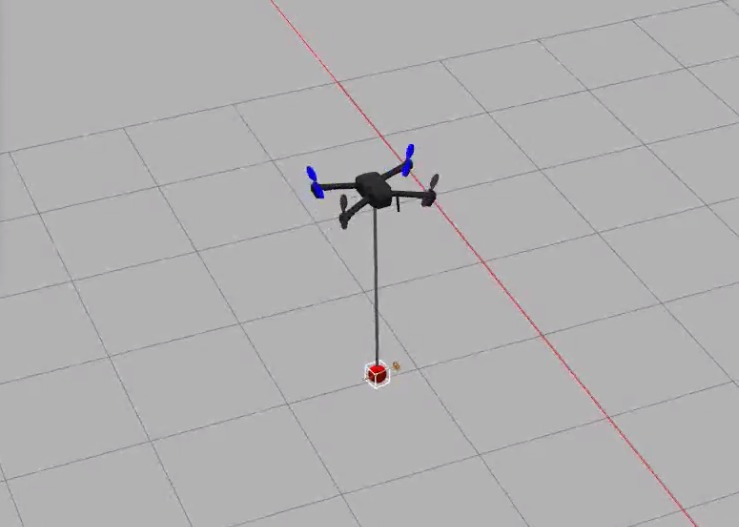
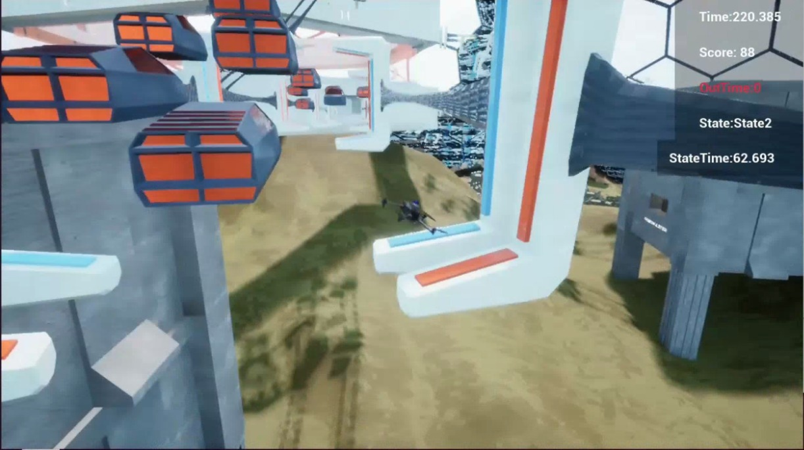

01 / Motion Planning
无人机运动规划
关注复杂环境下的无人机自主飞行，开展运动规划算法开发、机载部署与实机验证。详细研究内容将在适当时间补充。
详细介绍暂不公开
南方科技大学 · 控制科学与工程硕士生
关注无人机运动规划、自主导航与控制，探索从算法设计到实机验证的完整过程。
关注复杂环境下的无人机自主飞行，开展运动规划算法开发、机载部署与实机验证。详细研究内容将在适当时间补充。
详细介绍暂不公开


目前就读于南方科技大学控制科学与工程硕士专业（2025–2028），本科毕业于中国矿业大学机器人工程专业（2021–2025）。
使用 C++、Python 与 ROS 开发机器人算法，在 Gazebo、Isaac Sim / Isaac Lab 中验证，并将规划与控制方法部署到真实无人机。
联系我 ↗